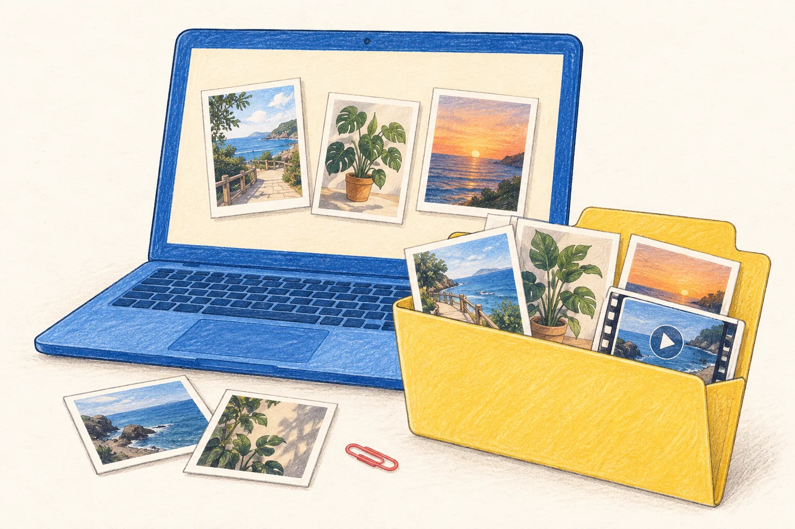

APPLE SILICON
Mac Apple 芯片
适合 M 系列芯片的 Mac。
macOS 13 或更新版本 · arm64
下载 Mac 版Brclio 小红书下载器 · 桌面版
从一篇笔记到整个主页，把图片、视频和文案，
好好收进你的本地文件夹。
支持 macOS / Windows · 无需配置运行环境

发布于 2026.09.24
请选择与你电脑系统和芯片相符的安装包。
适合 M 系列芯片的 Mac。
macOS 13 或更新版本 · arm64
下载 Mac 版适合搭载 Intel 处理器的 Mac。
macOS 13 或更新版本 · x64
下载 Intel 版安装后，从桌面快捷方式开始。
Windows 10 / 11 · x64
下载 Windows 版不确定 Mac 芯片？点左上角 →「关于本机」。
Windows 便携版 大小以发布附件为准单篇下载免费。主页批量下载需要有效会员及已授权设备，可在软件内登录并兑换激活码。了解账号与会员 ↗
安装包来自 GitHub Releases。查看最新发布 ↗
文件整理示意 · 具体媒体以原笔记为准
按序号和标题归档，媒体与文案放在一起。
自定义采集间隔，暂停后继续，失败项单独重试。
保存到指定目录，继续与重试不打乱已有序号。
Mac 打开 DMG，将应用拖入「应用程序」。Windows 运行安装包，按提示完成安装。
单篇笔记直接解析。主页批量请先开通会员，并在软件独立窗口登录小红书。
主页任务可设置保存目录和采集间隔。暂停或关闭后，下次打开可手动继续。
运行环境已内置，不需要另装 Python、Node.js 或 Chrome。遇到安装提示？查看帮助 ↗
偶尔保存一篇笔记，用网页版就可以。需要采集作者主页、指定本地文件夹、设置间隔和保留任务进度时，选择桌面版。两者都支持单篇笔记的图片、视频和文案下载。
桌面版还可将多张独立原图一次复制到系统剪贴板，粘贴到支持多图片或多文件粘贴的应用；网页端受浏览器剪贴板能力限制。
打开网页版 ↗单篇下载免费。主页批量下载需要有效会员和已授权设备：在「账号与会员」中用邮箱登录，点击「开通会员」选择日付 2 元（1 天）、月付 9.9 元（30 天）或年付 39.9 元（365 天）。付款务必备注软件账号邮箱，核实收款后激活码会发送至该邮箱，再回到客户端兑换；按次购买，不自动续费。读取主页时，还需要在软件的独立小红书窗口登录；这与软件账号是两套登录。
会员到期或退出软件账号，不会主动删除已下载文件和任务记录。
当前 Mac 版尚无 Apple Developer ID 签名及公证，Windows 版尚无发布者代码签名，首次打开可能出现系统提示。请确认安装包来自本页链接的官方 GitHub Releases，并先阅读发布说明中的安装步骤。
Mac 若出现钥匙串授权，它用于保护本机账号信息；拒绝后可在软件账号页重试安全存储。请勿删除账号或任务文件来处理授权问题。
查看安装与发布说明 ↗可在桌面版「关于软件」里检查更新，也可下载完整安装包覆盖安装。正常更新会保留账号、任务记录和已保存文件，更新后任务需要手动继续。
Mac v1.8.3–v1.8.6 首次升级：请等待已有安装结束，完全退出旧版，用本页完整 DMG 覆盖原安装位置，再从「应用程序」手动打开新版。Windows 便携版通过应用内更新会转为安装版。
实况保存为 JPG + MP4 配对素材，不会自动变成 Apple Photos 原生 Live Photo。主页任务按发现顺序创建「序号－标题」文件夹，保存可用的媒体与笔记文案。
采集范围为当前登录账号可见、能打开详情的笔记。遇到登录、验证码或访问限制时，请按提示处理后继续；失败项可重试。请尊重创作者版权与平台规则。
安装包由 GitHub Releases 提供，网络暂不可达时可以稍后重试，或前往发布页下载。Mac 和 Windows 安装包需要在对应电脑上运行；手机可以先使用网页版保存单篇笔记。
前往 GitHub 下载 ↗